San Diego Travel Guide
Second most populous city in California, is known for its mild year-round climate, natural deep-water harbor, extensive beaches and parks, and long association with the United States Navy and Marine Corps.
Top Locations
Places to See in San Diego

Matthew T Rader, CC BY-SA 4.0, via Wikimedia Commons; Image Size Adjusted
Balboa Park
1,200-acre historic urban cultural park containing museums, several theaters, and the world-famous San Diego Zoo

Visitor7, CC BY-SA 3.0, via Wikimedia Commons; Image Size Adjusted
Belmont Park
Historic amusement park located on Ocean Front at Surfrider Square in the Mission Bay area of San Diego
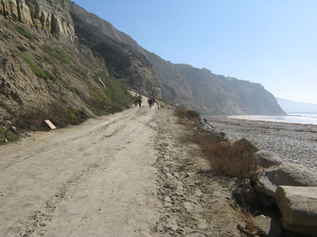
Abeach4u, CC BY-SA 3.0, via Wikimedia Commons; Image Size Adjusted
Black's Beach
Secluded section of beach beneath the bluffs of Torrey Pines on the Pacific Ocean in La Jolla, San Diego
Robert Arends, CC BY-SA 4.0, via Wikimedia Commons; Image Size Adjusted
Cabrillo National Monument
Commemorating the landing of Juan Rodríguez Cabrillo at San Diego Bay on September 28, 1542, the first time a European expedition had set foot on what later became the West Coast of the US
Lmcorle, CC BY-SA 3.0, via Wikimedia Commons; Image Size Adjusted
Coronado Beach
Resort city located in San Diego County including Coronado Beach and the famous Hotel del Coronado, built in 1888 and long considered one of the world's top resorts


Cowles Mountain
Prominent mountain located in the San Carlos neighborhood, the 1,593-foot summit is the highest point of the city of San Diego
Roman Eugeniusz, CC BY-SA 3.0, via Wikimedia Commons; Image Size Adjusted
.jpg){kind=link}
Embracing Peace | Unconditional Surrender
1,200-acre historic urban cultural park containing museums, several theaters, and the world-famous San Diego Zoo
Bernard Gagnon, CC BY-SA 3.0, via Wikimedia Commons; Image Size Adjusted

Gaslamp Quarter
16½ block historical neighborhood in Downtown San Diego, and is the site of several entertainment and night life venues, as well as scheduled events and festivals
Invertzoo, CC BY-SA 3.0, via Wikimedia Commons; Image Size Adjusted

La Jolla Cove
Small, picturesque cove and beach that is surrounded by cliffs, is protected as part of a marine reserve; underwater it is very rich in marine life, and is popular with snorkelers, swimmers and scuba divers
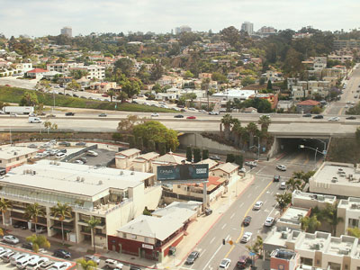
formulanone, CC BY-SA 2.0, via Wikimedia Commons; Image Size Adjusted
.jpg){kind=link}
Little Italy San Diego
Neighborhood in Downtown San Diego, originally a predominantly Italian and Portuguese fishing neighborhood, now a popular neighborhood full of Italian restaurants and grocery stores, art galleries and residential units

FASTILY, CC BY-SA 3.0, via Wikimedia Commons; Image Size Adjusted

Manchester Grand Hyatt Hotel
High-rise hotel complex in San Diego, composed of two towers which are the third- and ninth-tallest buildings in the city
Maritime Museum of San Diego
Preserves one of the largest collections of historic sea vessels in the United States. Located on the San Diego Bay, the centerpiece of the museum's collection is the Star of India, an 1863 iron bark
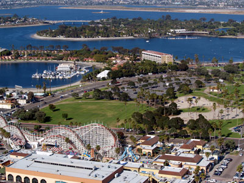
Philkon (Phil Konstantin), CC BY-SA 3.0, via Wikimedia Commons; Image Size Adjusted

Mission Bay
Largest man-made aquatic park in the country created to enhance recreational opportunities including wakeboarding, jet skiing, sailing, camping, cycling, jogging, roller skating and skateboarding, and sunbathing
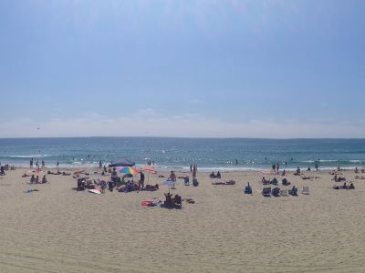
Dronepicr, CC BY 3.0, via Wikimedia Commons; Image Size Adjusted
.jpeg){kind=link}
Mission Beach
Popular and busy San Diego beach and nightlife spot known for sunbathing, horseshoes, surfing, bicycling, skateboarding, Frisbee tossing, and other outdoor activities
Mission San Diego de Acala
First Franciscan mission in The Californias is the fifth to stand on this location. The mission site is a National Historic Landmark

Dmadeo, CC BY-SA 3.0, via Wikimedia Commons; Image Size Adjusted

Mission Trails Regional Park
7,220-acre open space preserve within the city of San Diego, consisting mostly of rugged canyons and hills, with both natural and developed recreation areas
Beyond My Ken, CC BY-SA 4.0, via Wikimedia Commons; Image Size Adjusted

Mt Soledad National Veterans Memorial
Memorial and prominent landmark located on top of Mount Soledad in the La Jolla neighborhood, featuring the third Christian cross in that location
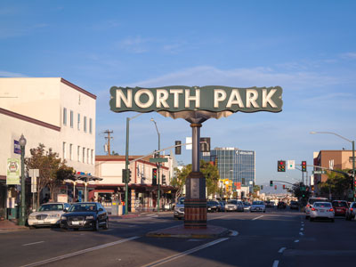
Visitor7, CC BY-SA 3.0, via Wikimedia Commons; Image Size Adjusted
.jpg){kind=link}
North Park
Neighborhood in San Diego, California, including the sub-neighborhoods of Burlingame, Altadena, and the Morley Field area known for the mixed architectural styles from many eras
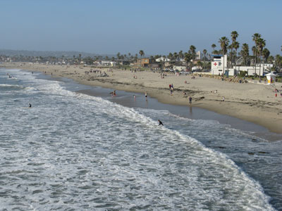
Brocken Inaglory, CC BY-SA 3.0, via Wikimedia Commons; Image Size Adjusted

Ocean Beach
Beachfront neighborhood of San Diego, featuring the 1,971 ft Ocean Beach Municipal Pier, built in 1966, is the longest concrete pier in the world and the second longest ocean pier in California
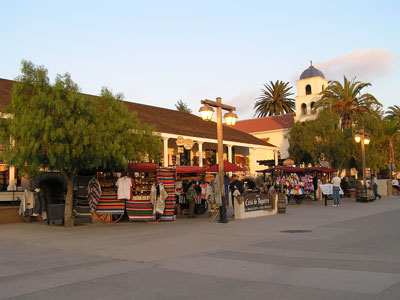
Epukas, Public domain, via Wikimedia Commons; Image Size Adjusted

Old Town San Diego State Historic Park
Oldest settled area in San Diego and is the site of the first European settlement in present-day California
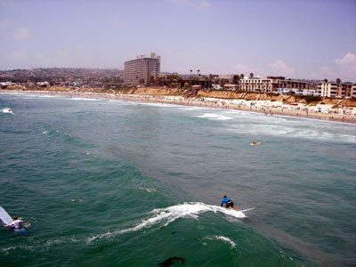
Alex Healing, CC BY 2.0, via Wikimedia Commons; Image Size Adjusted

Pacific Beach
Beach stretching for miles from the Mission Bay jetty to the cliffs of La Jolla with its boardwalk running 3.2 miles along the beach with numerous local shops, bars, hotels, and restaurants
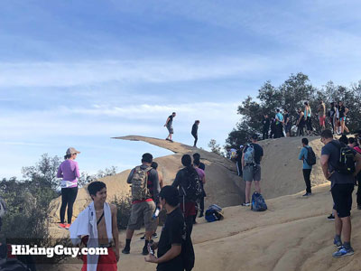
HikingGuy, CC BY-SA 4.0, via Wikimedia Commons; Image Size Adjusted

Potato Chip Rock
Natural tourist attraction near San Diego, located on the Mt. Woodson summit and is famous for resembling a potato chip
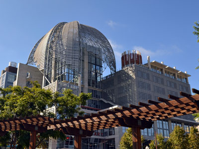
Nserrano, CC BY-SA 3.0, via Wikimedia Commons; Image Size Adjusted

San Diego Central Library
Main branch of the San Diego Public Library topped with an iconic steel-and-mesh lattice dome over a two-story rare-book reading room
Andrewjames954, CC BY-SA 4.0, via Wikimedia Commons; Image Size Adjusted

San Diego Zoo
Zoo in Balboa Park, housing over 12,000 animals of more than 650 species and with more than 4 million visitors is the most visited zoo in the US is cited as one of the best zoos of all time
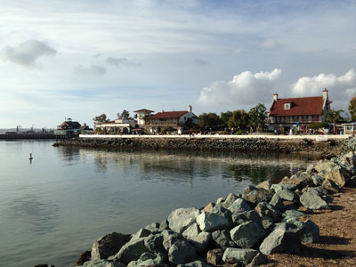
FASTILY, CC BY-SA 3.0, via Wikimedia Commons; Image Size Adjusted

Seaport Village
Waterfront shopping and dining complex adjacent to San Diego Bay in downtown San Diego, housing more than 70 shops, galleries, and eateries

OperaSmorg, CC BY 3.0, via Wikimedia Commons; Image Size Adjusted

Spruce Street Suspension Bridge
Pedestrian bridge suspended over a canyon offering scenic views and a swaying walkway experience.
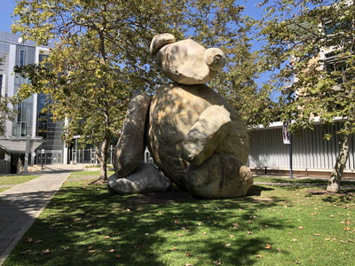
AndyrooP, CC BY-SA 4.0, via Wikimedia Commons; Image Size Adjusted

Stuart Collection
Collection of public art on the campus of the University of California San Diego
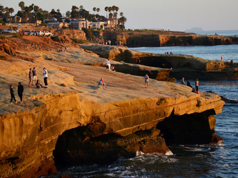
Roman Eugeniusz, CC BY-SA 3.0, via Wikimedia Commons; Image Size Adjusted
.jpg){kind=link}
Sunset Cliffs
68-acre resource-based park stretching along the Pacific Ocean bordering the western edge of Point Loma includes intricately carved coastal bluffs, arches and sea caves, affording inspiring panoramic ocean views
Torrey Pines State Natural Reserve
Dunes, beaches, wildflower-covered hillsides, eroded sandstone cliffs and scattered groves of the rare torrey pine. A popular location, due to the proximity to La Jolla and San Diego.
USS Midway Museum
Life-at-sea exhibits, restored planes & flight simulators aboard this legendary aircraft carrier
Overview
San Diego is a sunny Southern California coastal city on the Mexican border, the second largest in the state with about 1.4 million residents. It is known for its near-perfect year-round weather, 70 miles of beaches, a deep-water harbor and a strong military presence, with major Navy and Marine Corps bases.
Visitors come to San Diego for the San Diego Zoo, Balboa Park, SeaWorld, the beaches of La Jolla, Pacific Beach and Coronado, the historic Gaslamp Quarter, Old Town and the USS Midway Museum. The city also hosts Comic-Con International each July and is known for its craft breweries, Mexican food and fish tacos.
History
San Diego is called the "Birthplace of California." Juan Rodriguez Cabrillo landed in San Diego Bay in 1542 and claimed the coast for Spain, and the Presidio and Mission San Diego de Alcala, founded in 1769, formed the first European settlement in what is now California. The city grew after Alonzo Horton developed a "New Town" on the waterfront in 1867, and the Navy, aircraft manufacturing and the 1915 Panama-California Exposition made it a major city in the 20th century.
Sightseeing and Popular Landmarks
Balboa Park, Old Town San Diego, the Gaslamp Quarter, Seaport Village, Cabrillo National Monument and the Hotel del Coronado area are the main sights. Belmont Park, La Jolla Cove and Mt. Soledad offer views of the coast.
Culture and Museums
Balboa Park has 17 museums, gardens and the Spanish Colonial Revival buildings left from the 1915 Exposition, including the Museum of Us, the San Diego Museum of Art and the Fleet Science Center. The Maritime Museum displays historic ships, the Central Library is a landmark of architecture, and the Stuart Collection on the UC San Diego campus displays public art.
Parks
Nature preserves in the city include Torrey Pines State Natural Reserve, home to the rare Torrey pine, Los Penasquitos Canyon Preserve and Mission Trails Regional Park. Mission Bay Park is one of the largest urban aquatic parks in the country, and Sunset Cliffs, Ocean Beach and Black's Beach offer shoreline hikes and surf.
Sports
The San Diego Padres (MLB) play at Petco Park downtown, San Diego FC (MLS) and the San Diego Wave (NWSL) play soccer, and the San Diego Gulls (AHL) play hockey. The San Diego State Aztecs are the major college team, and the Torrey Pines Golf Course hosts the Farmers Insurance Open each year.
Seasons and Weather
San Diego has one of the best climates in the country, with highs in the upper 60s to upper 70s°F near the coast and more than 200 days a year above 70°F. Rainfall is only about 10 inches a year, mostly in winter, and the coast often has "May Gray" and "June Gloom" fog in late spring and early summer. Inland areas are hotter in summer, and Santa Ana winds raise fire danger in fall.
This article uses material from Wikipedia as well as information from official tourism and institutional sources. Key references include San Diego Tourism Authority, City of San Diego, Balboa Park, Cabrillo National Monument, and National Weather Service San Diego. Wikipedia material is from the article "San Diego", released under the Creative Commons Attribution-Share-Alike License 3.0.
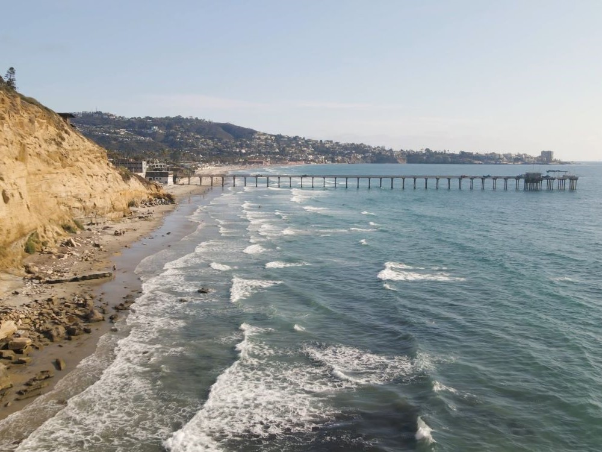

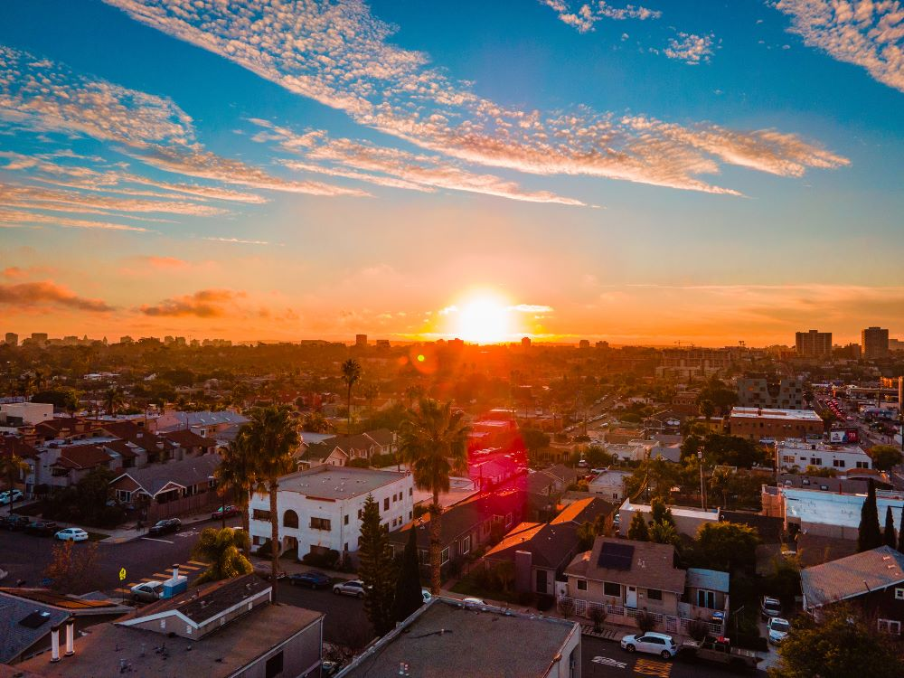

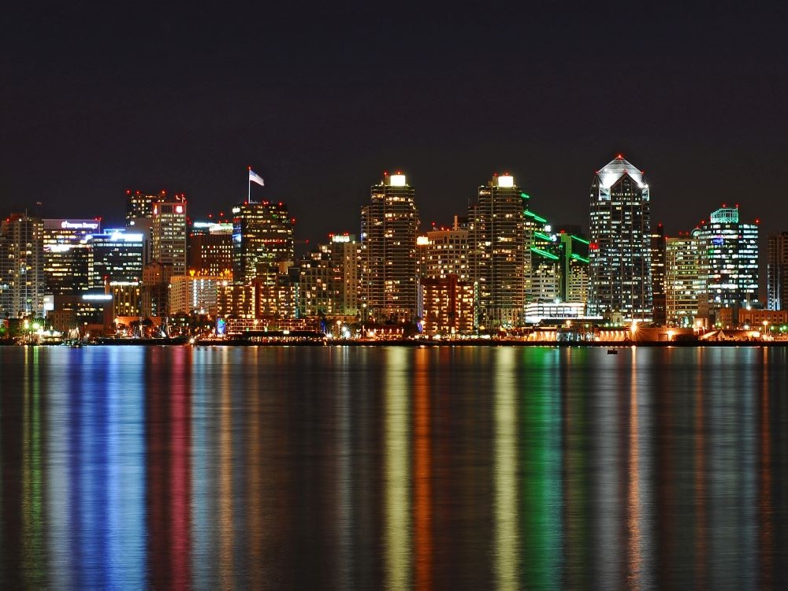

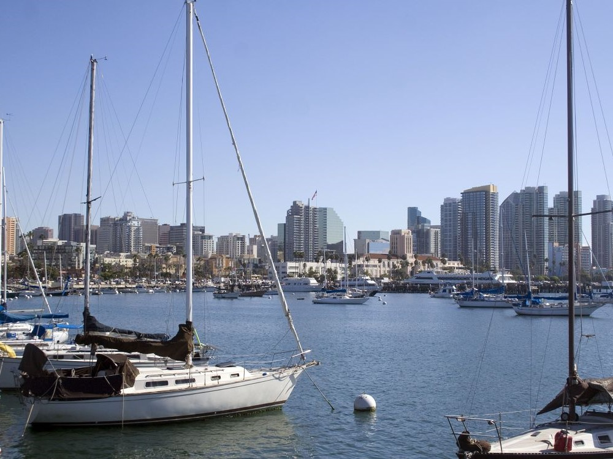